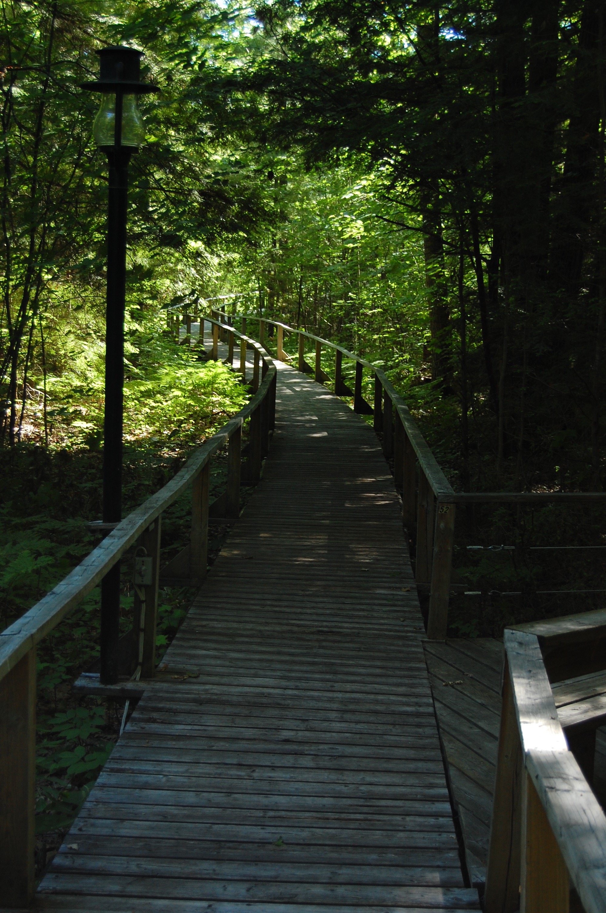

work history
| Position | Company | Dates | Location | |
|---|---|---|---|---|
 |
GIS Technician | Apple, Inc | February, 2019 - Present | Austin, TX |
Responsiblities:
- Implemented multiple pilot projects focused on data integrity, quality assurance, and data validation.
- Implemented multiple pilot projects focused on data integrity, quality assurance, and data validation.
 |
Resource Management Assistant | National Park Service | June, 2018 - December, 2018 | Southeast Arizona (Coronado National Memorial, Chricahua National Monument, Fort Bowie National Historic Site) |
Responsiblities:
- Implemented the pilot Unstable Slope Management Program (USMP) to document over 300 risky roadside and trailside geologic hazards. Presented USMP work to American and Mexican conservationists at bi- national conference in Elgin, Arizona.
- Led field work teams to find, document, and analyze more than 60 abandoned mines with regards to polyurethane foam contamination, water quality, microclimate analysis, and environmental due diligence.
- Edited and helped author Cave and Mine Management report, USMP report, and numerous grant proposals within federal guidelines.
- Served as GIS point of contact for every park discipline, led field teams for research site delimitation, maintained geodatabase administration, and developed SQL queries.
 |
Refuge Managment Intern | U.S Fish & Wildlife Service | June, 2017 - July, 2017 | Eufuala, AL |
Responsiblities:
- Managed invasive loblolly pine growth using brush saws, clearing more than 20 acres over the course of the summer in order to control growth.
- Took control of Refuge GIS in order to redesign visitor service maps and refuge resource facility maps.
|  | Bookkeeper | Iron City Fishing Club | June, 2016 - August, 2016 | Georgian Bay, ON |
Responsiblities:
- Implemented multiple pilot projects focused on data integrity, quality assurance, and data validation.
- Responsible for digitizing and assembling new content from various sources, including databases, files/spreadsheets, and client resources.
 |
Geology Intern | AECOM | June, 2015 - August, 2015 | Austin, TX |
Responsiblities:
- Responsible for helping edit Quarterly Groundwater Monitoring Reports and compiling chemical analyses according to Texas Commission on Environmental Quality standard operating procedures.
- Performed on-site groundwater remediation at Laughlin AFB, Del Rio TX, and HuMar Chemicals, Palacios TX. Managed low flow groundwater monitoring and analysis equipment.
education
B.S Geology, GIS Minor, George Washington University
Graduated May, 2018
coarsework:
Mineralogy
Igneous & Metamorphic Petrology
Geophysics
Digital Image Processing
Remote Sensing
Spatial Statistics
Current Crustal Movement
Geologic Field Techniques
Intermediate GIS
Structural Geology
Historical Geology
Physical Geology
Geology of Iceland